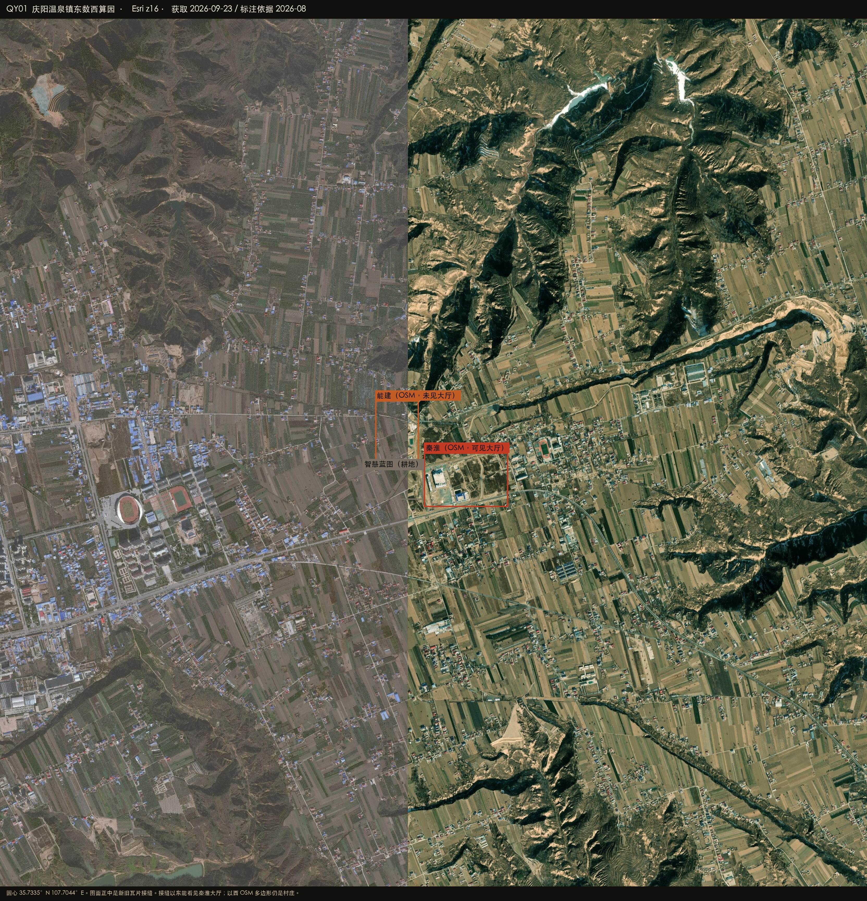
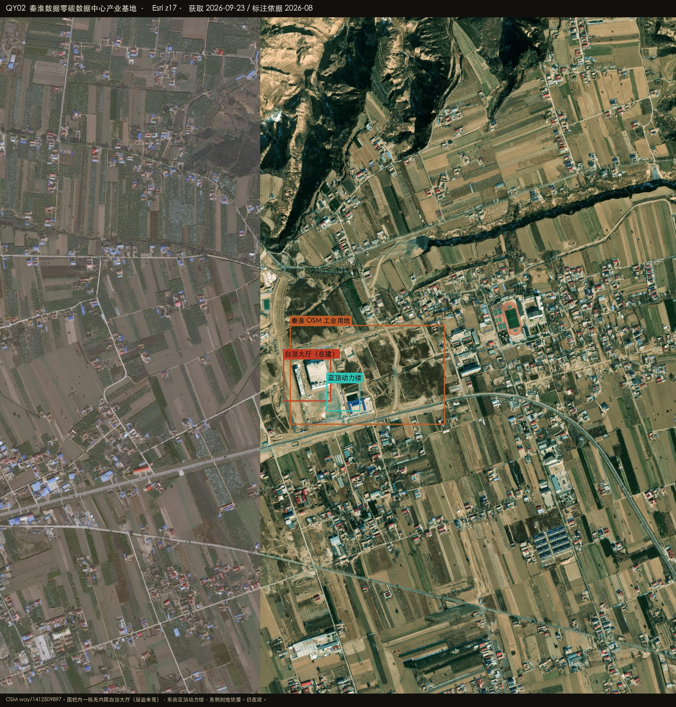

Datacenter Probe · 庆阳
35.7335°N 107.7044°E · r = 50 km
Esri World Imagery · 2026-08-27
Satellite reconnaissance · Gansu
庆阳周边数据中心建设情况
庆阳枢纽在西峰区温泉镇新桥村黄土塬上，距中卫约 280 km。OSM 把秦淮、能建、移动、电信、联通、智慧蓝图都标在园里。本幅 Esri 有一道南北向新旧瓦片接缝：接缝以东能看见秦淮地块一栋无内院白顶大厅（屋面未完）加东南蓝顶动力楼和垫层；接缝以西的运营商多边形仍落在村庄条田上，不能当已建大厅。

HERO · 温泉镇 · 接缝以东是秦淮大厅，以西仍是村庄
在建 / 高置信机房
已投运 / OSM 具名
候选 / 业主待核
排除或不像机房
底图 Esri World Imagery（WGS84）
QY-CHINDATA · 一栋大厅
OSM 有名。围栏内白顶大厅（屋面未完）+ 蓝顶动力楼 + 垫层。仍在建。
中高 · 在建
QY-CEEC 等 · OSM 名
能建、移动、电信、联通、智慧蓝图 OSM 有名；本幅 Esri 仍是耕地村庄。
中 · 候选
排除 · 城区
way/1339493828 在西峰城区，住宅空地。
排除
排除 · 华为
供电方案报道，无 OSM 名、无牌匾机房，不记为业主。
排除
35.7334°N 107.7018°E
秦淮数据零碳基地
兰州路北、纵二路东。OSM way/1412509897，35.7317–35.7354N 107.7009–107.7079E。2024-07 报道一期 A 模组验收，本幅 Esri 仍是在建。
中高置信 · 大厅形态 / 在建
- 围栏内无内院白顶大厅，屋面未完（35.7326–35.7341N 107.7006–107.7028E）
- 东南蓝顶动力楼 + 东侧刮地垫层
- 能建/移动/电信/联通/智慧蓝图 OSM 多边形在接缝以西，本幅未见大厅
- 城区 way/1339493828 庆阳数据中心是住宅空地，排除
秦淮数据
在 Google 卫星图打开 ↗

PLATE QY02 · 秦淮 · Esri z17
PLATE QY01 · 总图 · 接缝以东才有大厅
怎么判，什么不算
圆心在温泉镇园区，不在西峰城区。Esri 瓦片接缝是这次判断的硬约束：旧瓦片上的 OSM 名不能当成已建大厅。
算作机房
- 无内院白顶大厅 + 动力楼 + 垫层（秦淮，在建）
- OSM 具名只当作选址线索，必须看见大厅才升级
明确排除
- 城区「庆阳数据中心」住宅空地
- 接缝以西尚未出大厅的 OSM 多边形
- 华为数字能源供电方案
- 民房、条田、体育场
在 Google 卫星图打开圆心 ↗